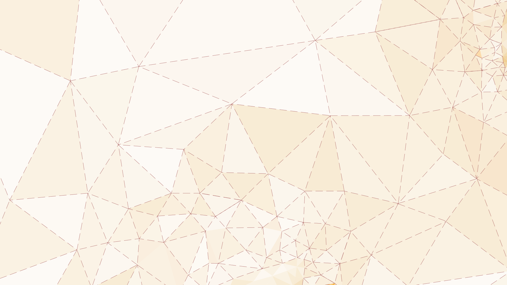

<audio src="audios/FUNDO/ambientes_de_resistencia.mp3" autoplay loop><p>Seu nevegador não suporta o elemento audio.</p></audio>
<iframe src="https://www.youtube.com/embed/3K0maI9Hk0A?version=3&autoplay=1&controls=0&loop=1&rel=0&showinfo=0&modestbranding=1&playlist=3K0maI9Hk0A" frameborder="0" allow="autoplay; encrypted-media" allowfullscreen></iframe>

<a href="#b_" class="close"></a>
<svg class="layer default_nav" version="1.1" id="Layer_1" xmlns="http://www.w3.org/2000/svg" xmlns:xlink="http://www.w3.org/1999/xlink" x="0px" y="0px"
   viewBox="0 0 1920 1080" style="enable-background:new 0 0 1920 1080;" xml:space="preserve">
  <a xlink:href="#v_quem_somos">
    <polygon class="st7" points="266.4,306.2 525.8,252.2 448.2,548.7 "/><text transform="matrix(0.983 0 0 1 347.3235 363)">QUEM SOMOS</text>
  </a>
  <a xlink:href="#v_construindo_mapas_pessoais">
    <polygon class="st0" points="878.1,393.7 1250.9,438.1 1193.5,153.3 "/>
    <text transform="matrix(0.983 0 0 1 1047.509 330.1113)"><tspan x="0" y="0">CONSTRUINDO </tspan><tspan x="-8.1" y="18.4">MAPAS PESSOAIS</tspan></text>
  </a>
</svg>
